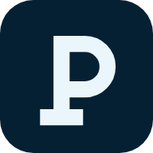
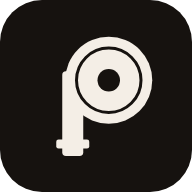

Solo tema oscuro. Cada una trae logo, iconos, colores de Víctor y Virginia, letra, movimiento y tres pantallas con datos de ejemplo. Elige una, o una mezcla («la letra de Hierro con los colores de Carril»).
Segunda vuelta: Carril 2
Carril, más sobria y elegante: menos piscina literal, más aire, una letra más fina (Instrument Sans) y más movimiento (el agua sube al terminar, las cifras fluyen, las pantallas se cruzan). Víctor la ha aprobado. Logo: Trenza, elegido por Víctor el 20-11-2026 (dos trazos, lima y rosa, que se cruzan por encima y por debajo), ya aplicado en Carril 2.
Comparar la misma pantalla
Desliza en horizontal para pasar de una dirección a otra (la primera es Carril 2). Los móviles se ven a escala si no caben.
La pizarra del gimnasio. Verde pizarra mate y tiza blanca; cada semana se apunta con palotes y el tachón cierra lo completo. Letra muy legible para leer de lejos con reflejos.
Pizarra #1A221E
Panel #222B26
Tiza #EEEDE6
Víctor, tiza azul #8CC8F2
Virginia, tiza amarilla #F2D04E
Bricolage Grotesque (títulos y cifras) y Atkinson Hyperlegible Next (texto). 74 KB.
Las pantallas aparecen subiendo 6 px y el subrayado se dibuja. Al terminar, los palotes se escriben uno a uno y el tachón suelta polvo de tiza.

Carril
La piscina climatizada de noche. Azul de agua, calles y corcheras como estructura, la T de la pared como señal de «completo» y cifras estrechas de marcador de competición.
Agua #062033
Calle #0B2C45
Azulejo #EAF6FB
Víctor, lima #C6F04D
Virginia, rosa #FF7EB6
Saira, una sola familia variable en peso y anchura: normal para leer, estrecha para las cifras. 97 KB.
Todo se mueve en horizontal, como un largo: las pantallas llegan desde la derecha (y vuelven desde la izquierda). Al terminar, la calle se completa hasta la pared y salen ondas.


Hierro
Cartel de sala de pesas. Negro de hierro cálido, cifras enormes en una letra muy estrecha y una rejilla rígida. Los discos son la unidad: la semana, el progreso y la celebración se miden en discos.
Hierro #16120F
Panel #221C17
Papel #F4EEE6
Víctor, ámbar #F5B13D
Virginia, lavanda #A99BFF
Sofia Sans Extra Condensed (titulares y cifras) y Onest (texto). 73 KB.
Las pantallas suben 12 px y las cifras grandes salen de su línea base, como un cartel que se pega. Al terminar, los discos entran en la barra desde los lados y el total cuenta hasta su valor.